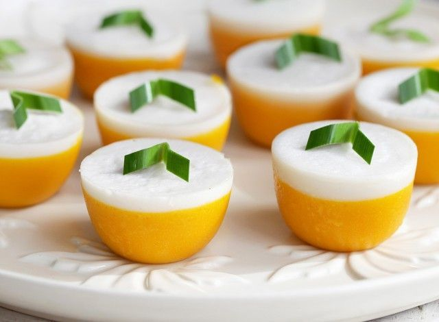

Dh
Dessert House
Talam Cake

Talam Cake
From Java
Talam cake
is one type of traditional Indonesian snack food so easily found everywhere in all regions of Indonesia. In the fasting month, talam cake is one of the iftar menus which is quite popular. Trays are generally made with raw materials such as rice flour, cassava flour, flour or sago flour. These starches are included in the category of simple carbohydrates that have a high glycemic index value. In this healthy recipe I try to modify the talam cake so that it becomes healthier, more nutritious and can be served for breaking the fast menu.
Facebook
Instagram
Twitter